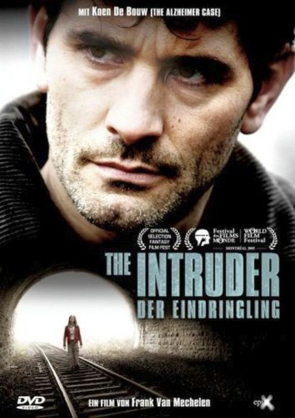

#6077 Der Eindringling
 
 IMDB-Wertung: 6.8 / 10
IMDB-Wertung: 6.8 / 10  Metascore: 0
Metascore: 0 
Alkoholkrank und verstört vom bereits eineinhalb Jahre zurückliegenden Verschwinden seiner kleinen Tochter nervt Klinikarzt Tom Patienten, Kollegen, Gott, die Welt und den Weihnachtsmann mit penetranten Nachforschungen. Endlich keimt Hoffnung, als die 16jährige Ausreißerin Charlotte auf ein Foto seiner Tochter reagiert. Charlotte schweigt jedoch im weiteren beharrlich, weshalb ihr Tom ins heimische Ardennendorf folgt, mißtrauisch beäugt von den Bewohnern, die eine verschworene Gemeinschaft bilden. Gegen alle Widerstände und brutale Attacken findet Tom heraus, dass es tatsächlich eine Verbindung zwischen Charlotte und Louise gibt...
Jahr: 2005
Dauer: 114 Minuten
FSK: 16
Land: Belgien Studio: Epix MediaTonspuren:
Untertitel:
Auflösung: 720p (1280x552) Größe: 2631 MB
Genre: Thriller, Mystery
Regisseur: Frank van Mechelen
Drehbuch: Alice Lowe
Soundtrack:
Darsteller:
- Koen De Bouw als Tom Vansant
 Filip Peeters als Roland Dunewolt
Filip Peeters als Roland Dunewolt- Axel Daeseleire als Wes Moons
 Stéphane De Groodt als Vader Paul Florent
Stéphane De Groodt als Vader Paul Florent Eric Godon als Victor Philips
Eric Godon als Victor Philips Georges Siatidis als Mathieu
Georges Siatidis als Mathieu- Sien Eggers als Elsie
- Vic de Wachter als Nivek
- Jan Bollen als Lichtgewonde
- Herman Boets als Zwaargewonde
- Günther Lesage als Frankie
- Koen van Impe als Mike
- Maurice De Grauwe als Gerant
- Marc Didden als Cafébaas
- Dimitri Duquennoy als Agent
- Gauthier de Fauconval als Luc Florent
- Steve Aernouts als Freddy
- Omer Laloux als Procureur
- Brigitte Boisacq als Gaby
- Erik De Backer als Vriend van Nivek
- Katrien De Ruysscher als Agente
- Bertrand Delaude als Politieman
- Els Dottermans als Erika
- Christine Dysers als Vriend Henri Nivek
- Ianka Fleerackers als Tania
- Leo Franquet als Vriend Henri Nivek
- Els Janssens als Vriend Henri Nivek
- Nathalie Laroche als Moeder van Florent
- Olivia Le Clercq als Mw. Fonteyne
- Jonas Leemans als Jean
- Johanna Lesage als Vriend Henri Nivek
- Maaike Neuville als Charlotte
- Tania Poppe als Moeder van Louise
- Lien Van Cant als Louise
- Nathan Van Coillie als Vriend Henri Nivek
- Viv Van Dingenen als Psychiater
- Gregory Wirix als Vechtersbaas
Datei: X:\2005(A-F)\Eindringling, Der (2005, FSK16, 1280x552).mkv seit 28.04.2017
Festplatte: HD 2003-2004-2005(A-F)
 Es gibt insgesamt 49 Filme in der Gruppe '2005(A-F)'
Es gibt insgesamt 49 Filme in der Gruppe '2005(A-F)'